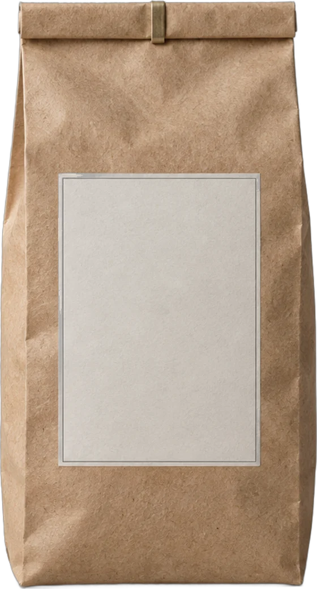
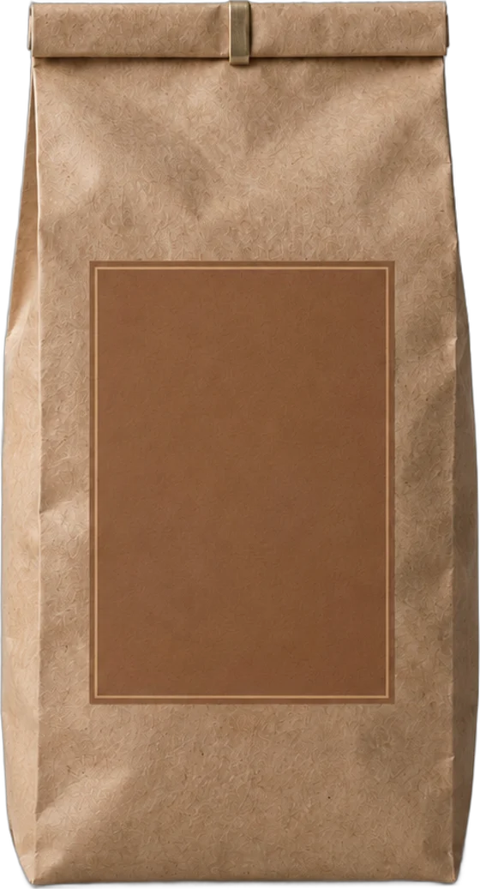

New Harvest · 2025/26
雾岭咖啡MISTRIDGE
2025/26 采收季
三款新豆发布
保山 · 高黎贡山东坡01 / 08
Origin
一座山，
三块地
高黎贡山东坡，从怒江河谷往上四百多米，三户人家各管一块地。
MISTRIDGE · 产地02 / 08
How We Work
我们怎么做
按批次
每袋标注庄园、处理批次和烘焙日期。一个批次卖完就下架。
每周二
一周只烘一次，48 小时内寄出。
12 kg
单批上限。单锅不超过 1.5 kg。
MISTRIDGE · 做法03 / 08

No.01 · 浅烘
雾起
MIST RISEwhite florals, lime zest, black tea
白花 · 青柠 · 红茶
- 海拔
- 1,450 m
- 品种
- 铁皮卡
- 处理
- 水洗
- 庄园
- 石阶
MISTRIDGE · 新豆 1 / 304 / 08

No.02 · 中浅烘
岭线
RIDGELINEyellow peach, honey, caramel
黄桃 · 蜂蜜 · 焦糖
- 海拔
- 1,280 m
- 品种
- 波邦
- 处理
- 红蜜
- 庄园
- 云台
MISTRIDGE · 新豆 2 / 305 / 08

No.03 · 中深烘
江岸
RIVERBANKdark chocolate, hazelnut, red date
黑巧 · 榛子 · 红枣
- 海拔
- 1,050 m
- 品种
- 卡蒂姆
- 处理
- 日晒
- 庄园
- 林家坡
MISTRIDGE · 新豆 3 / 306 / 08
Subscribe & Launch
订阅与上市
10.13周二 首批发售
首批限量 300 袋
微信 MISTRIDGE_COFFEE邮箱 hello@mistridge.coffee
轮换ONE BAG
每月 1 袋，三款轮流寄
¥68/ 月常备TWO BAGS
每月 2 袋，自选两款，月中月底各寄一次
¥128/ 月焙室THE ROOM
三款各 1 袋，附烘焙曲线与杯测记录
¥178/ 月MISTRIDGE · 保山07 / 08
Brewing
三种冲法，三款豆
烘焙后第 7–21 天的建议起点
研磨以 Comandante C40 与 EK43 为参照
雾起MIST RISE
岭线RIDGELINE
江岸RIVERBANK
手冲
Pour OverV60 02 · 闷蒸 30 s- 粉水
- 15 g / 240 g1:16
- 水温
- 93 ℃
- 研磨
- C40 24 格中细
- 时间
- 2:10–2:30
- 粉水
- 15 g / 240 g1:16
- 水温
- 91 ℃
- 研磨
- C40 25 格中细
- 时间
- 2:15–2:35
- 粉水
- 15 g / 225 g1:15
- 水温
- 88 ℃
- 研磨
- C40 27 格中
- 时间
- 2:00–2:20
意式
Espresso9 bar · 养豆 10 天以上- 粉液
- 18 g → 42 g1:2.3
- 水温
- 94 ℃
- 萃取
- 27–31 s预浸 5 s
- 适合
- 单饮
- 粉液
- 18 g → 38 g1:2.1
- 水温
- 93 ℃
- 萃取
- 26–30 s
- 适合
- 单饮 · 澳白
- 粉液
- 18 g → 36 g1:2
- 水温
- 91 ℃
- 萃取
- 25–28 s
- 适合
- 拿铁 · 卡布奇诺
冷萃
Cold Brew常温水 · 4 ℃ 冷藏三天内喝完
- 粉水
- 80 g / 1,000 g
- 研磨
- EK43 11粗
- 浸泡
- 14 小时
- 喝法
- 直饮，或加冰
- 粉水
- 90 g / 1,000 g
- 研磨
- EK43 11粗
- 浸泡
- 16 小时
- 喝法
- 直饮，或 1:1 兑冰水
- 粉水
- 100 g / 1,000 g
- 研磨
- EK43 12粗
- 浸泡
- 18 小时
- 喝法
- 1:1 兑牛奶
MISTRIDGE · 冲煮参数08 / 08